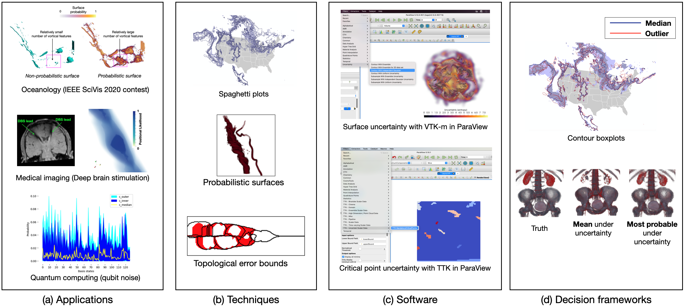

Uncertainty Visualization: Applications, Techniques, Software, and Decision Frameworks
Uncertainty visualization has become an increasingly important topic given the ubiquity of noise in data and computational processes. Although the research in uncertainty visualization has steadily progressed over the past few years, this critical branch of visualization is still in its infancy given many difficult challenges (e.g., computation, rendering, perception and decision-making) relevant to communication and understanding of uncertainty. One important step to address these challenges is to provide a venue that attracts a wide range of experts across many disciplines. A venue that allows experts in visualization, applications, applied math, perception, and cognition to publish and discuss effective ways to convey and understand uncertainty is an important step in advancing this critical area of research.The goal of the workshop is to bring together this multi-disciplinary group to enlighten the visualization community in the following four areas: (1) use cases in diverse application domains that can benefit from visualization of uncertainty (2) theory, techniques, and state-of-the-art software for uncertainty visualization (3) Methods/workflows that enable robust decisions under uncertainty (4) development of a future roadmap of uncertainty visualization research goals.

The IEEE VIS Workshop on Uncertainty Visualization aims at being an inclusive forum for the fast dissemination of the latest results in the uncertainty areas, including (but not limited to) applications, techniques, software, and decision frameworks. The workshop welcomes submissions to cover a broad range of studies in uncertainty analysis, including novel research contributions, domain-specific or general requirements for successful uncertainty analysis, obstacles to understanding data uncertainty presented through use cases, and successful uncertainty visualization workflows for robust solutions. This workshop is the important step to enhancing theoretical and practical understanding of analysis and treatment of uncertainty across diverse domains through exciting submissions and interaction among experts within and outside the visualization field.
Previously two successful workshops have taken place on the topic of uncertainty visualization in conjunction with IEEE VIS: Rhode Island, USA in 2011 (led by Chris R. Johnson and Alex Pang) and Chicago, USA in 2015 (led by Kristin Potter et al.). This is the third workshop to be held in conjunction with IEEE VIS.
To attend the Uncertainty Visualization workshp, please register through the IEEE VIS website.